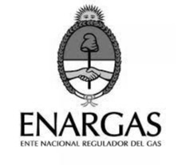

Analista en ENARGAS, Gerencia de Protección del Usuario
Auditorías a empresas distribuidoras de gas
Control de informes, seguimiento de imputaciones, expedientes
Análisis estadístico de reclamos


Auditorías a empresas distribuidoras de gas
Control de informes, seguimiento de imputaciones, expedientes
Análisis estadístico de reclamos

Laboratorio de instrumentos (1998 - 2007):
Area GNC/GLP (2007 - 2009):